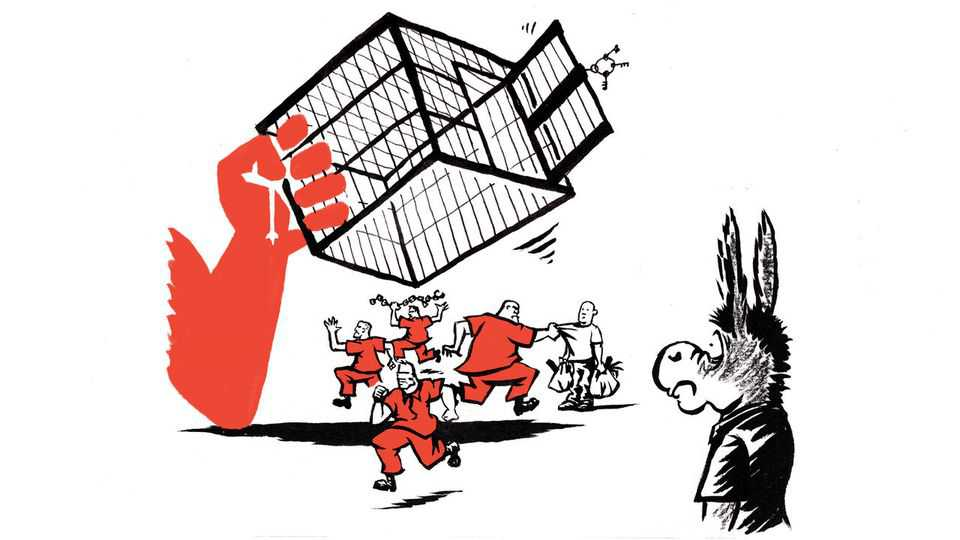

The left’s common-sense problem on crime
Radical ideas may seriously harm the Democratic Party
July 9th 2026

It is odd that the Republican Party, whose leader has 34 felony convictions and a knack for turning power into cash, is more trusted by voters to deal with crime. Yet that is what the polls say: YouGov puts Republicans ahead on this issue by 39% to 31%.
Part of the problem is that people recall the summer of 2020, when riots paralysed American cities after a cop murdered George Floyd. Some on the left then embraced radical slogans, such as “defund the police”, by which a few actually meant “abolish” them. Rates of murder and other violent crimes have fallen sharply since 2021. But memories linger of the Democratic mayor of Seattle, who tolerated a police-free zone in the city centre that inevitably turned violent. And today, though the Democratic Party’s actual platform on crime is boringly mainstream, the chatter among progressive activists can sometimes veer into dottiness.
At Netroots Nation, a progressive conference in Philadelphia in June, The Economist met Felix Rosado, one of the speakers. Though a convicted murderer, he seemed a nice fellow. He is truly sorry about the life he took decades ago, when he was a drug-dealing teenager. After serving 27 years behind bars, he now runs “Let’s Circle Up”, a project promoting “restorative justice”—the perfectly sensible idea that criminals should take concrete actions to try to make amends to those they have wronged.
However, he also thinks prisons and police should be scrapped. He talks of “creating the kind of world where cages are unnecessary”. If people were not poor, there would be less crime. And if, in this wonderful future, a few still stray, the “people in the community” should “determine what repair needs to look like”.
Very few Democrats would agree. But the Democratic Socialists of America, a group that endorses candidates in Democratic primaries and is on a roll this year, only recently removed prison abolition from its platform and still has an old page on its website that demands “freedom for all incarcerated people”. Darializa Avila Chevalier, a DSA-backed Democratic House candidate in New York, refused four times in a recent interview to agree that murderers should be locked up.
The utopian idea of building a society where predators no longer prey on the weak, even when the state cannot forcibly remove them from the streets, may win respectful nods in faculty lounges, but voters think it nuts. As for “community” justice, the theory sounds humane but the real-life alternative to a formal justice system has often been mob justice, as your columnist once saw in an underpoliced market in Zambia, where a crowd had caught a suspected thief. He was soaked in blood as they dragged him away.
Because extremism wins clicks, the stars of the progressive chattersphere are often extreme. Bank robberies are “cool”, says Hasan Piker, a lefty streamer with millions of followers. Mr Piker, who headlined a DSA event before New York’s primary, is “pro stealing from big corporations”, he told the New York Times, because they “steal” from workers by extracting surplus value from their labour. No politician would go so far, but some sympathise with shoplifters. “They are accessing things that their government will not provide,” suggests Chris Rabb, a DSA-backed House candidate from Pennsylvania. Or perhaps they are doing it “to punish a deceptive, unethical, profit-maximising business”.
The most alarming argument that some progressives make is that political violence is often justified. In an Emerson poll, 22% of Democrats thought the murder of a health-insurance boss in 2024 was “acceptable”. A New Yorker writer called the killing “an effective act of political consciousness-raising”.
What many of these ideas have in common, besides moral idiocy, is that they ignore incentives and knock-on effects. Yes, America should lock up fewer non-violent offenders. But if criminals can never be locked up, what will deter them from mugging you? Yes, some people struggle to afford groceries. But theft is hardly a solution to the affordability crisis. When some people steal, prices rise for everyone else. One can see a parallel with the left’s worst ideas about economics, which also gloss over incentives. Rent controls deter construction; rules making it hard to fire workers discourage firms from hiring them in the first place; and so on. A big difference, politically, is that whereas bad economics is often popular—58% of Americans and 75% of Democrats support rent controls, for example—far-left ideas on crime are not.
So they will not shape policy much, bar the odd, calamitous experiment in Seattle. No Democratic Congress would dream of legislating for murderers to be given a good talking-to and then released. Yet anti-cop animus can still infuse Democratic politics. Zohran Mamdani, New York’s DSA-backed mayor, vowed during his campaign to restrain the police. In office, when actually responsible for public safety, he tried to hire more. But then he backed down, in part due to pressure from his far-left base.
The big danger of daft ideas about crime is not that they will be enacted. It is that voters will feel the vibes and draw conclusions. Mr Piker’s ideas are simpler and more memorable than, say, the successful crime-fighting policies of Baltimore’s Democratic mayor. This helps Republicans push a simple, emotive message: Democrats coddle thugs while President Donald Trump blows up boats full of suspected drug smugglers.
Neera Tanden, the thoughtful head of the Centre for American Progress, a think-tank for Democratic moderates, recently sounded exasperated on X as she pointed out the folly of being associated with prison abolition. “[P]eople who murder people should go to jail. This is not a controversial idea,” she wrote. An “unapologetic leftist” commenter responded: “Hey Neera, can we please just skip to the part where you become a Republican?” ■
Subscribers to The Economist can sign up to our Opinion newsletter, which brings together the best of our leaders, columns, guest essays and reader correspondence.